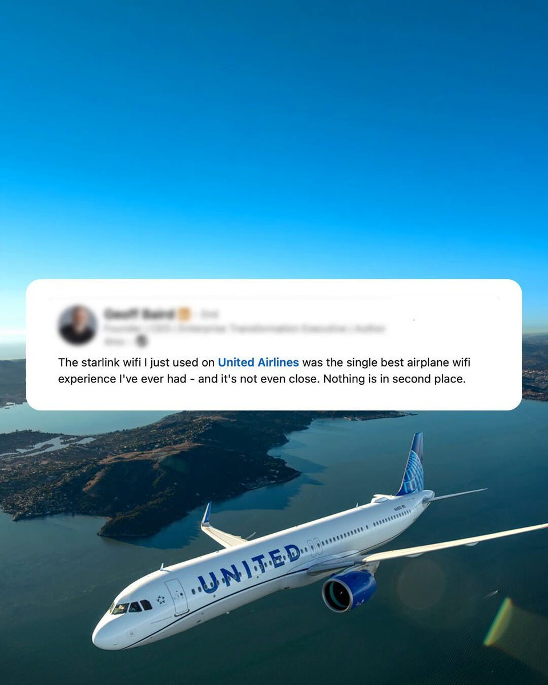

Per anni il Wi-Fi in aereo è stato un servizio lento, caro e poco affidabile, qualcosa da sopportare più che da scegliere. Questa settimana, presentando i conti del terzo trimestre, una delle tre grandi compagnie aeree americane ha detto una cosa nuova: la connessione Starlink di SpaceX sta diventando un motivo per cui i passeggeri scelgono con chi volare. «Clienti fedeli ad altre compagnie, che volavano con loro da anni, sono passati a un volo United solo per Starlink», ha detto mercoledì 21 ottobre l’amministratore delegato Scott Kirby agli analisti. Poche ore dopo Elon Musk ha commentato su X con quattro parole: «Starlink moves the needle», Starlink fa la differenza.
Cosa ha detto Kirby
United ha pubblicato i risultati del trimestre luglio-settembre la sera di martedì 20 ottobre e li ha commentati la mattina dopo da Houston, in Texas. I numeri sono di quelli che fanno notizia anche da soli: 17,9 miliardi di dollari di ricavi, più 17 per cento, il valore più alto della sua storia, e un record di 49,5 milioni di passeggeri in tre mesi, nonostante una spesa per il carburante salita del 62 per cento. Ma nella parte iniziale della teleconferenza Kirby ha scelto di parlare soprattutto di un’altra cosa, il Wi-Fi.
Il ragionamento è questo. Convincere un viaggiatore abituale a cambiare compagnia è difficilissimo: chi ha accumulato anni di miglia e uno status elevato con un vettore tende a restarci. «Ma stiamo vedendo che Starlink è un fattore che spinge i clienti a scegliere con quale compagnia volare», ha detto Kirby. Ha descritto due effetti. Il primo è il passaggio iniziale: passeggeri fedeli ad altri vettori prenotano un volo United per avere la connessione. Il secondo è che, una volta saliti a bordo, restano, perché trovano anche il resto del servizio, dagli schermi sui sedili alla app per smartphone, migliore di quanto si aspettassero.
Rispondendo a un analista, Kirby è stato ancora più netto: nella scelta di una compagnia aerea l’orario dei voli resta il primo criterio, ma Starlink «è chiaramente il numero due». E ha chiuso con una battuta rivolta a chi ascoltava la teleconferenza volando con altri: entro dodici mesi, ha detto, vi ritroverete al secondo o terzo volo United per via di Starlink, compilerete la domanda per la carta di credito della compagnia e vi accorgerete di aver cambiato vettore.
Andrew Nocella, responsabile commerciale, ha aggiunto il dettaglio che conta di più per i conti: Starlink è importante per tutti i passeggeri, ma è «decisivo» per chi viaggia per lavoro, il cliente che paga di più e che United vede come il motore della crescita nel 2027. È anche il cliente che più spesso divide i propri viaggi fra più compagnie, soprattutto negli aeroporti dove United compete direttamente con American o Delta.
I numeri dell’installazione
United ha cominciato a montare le antenne Starlink sui propri aerei nella primavera del 2025, partendo dai jet regionali. Oggi il sistema è installato su più di 640 velivoli, con un ritmo di circa tre aerei in più al giorno. Questa settimana la compagnia supera la soglia della metà dei voli serviti, jet regionali compresi, e si è data tre traguardi: il 61 per cento delle partenze entro la fine del 2026, l’87 per cento entro il 1° giugno 2027 e l’intera flotta, sia i jet della compagnia principale sia quelli regionali di United Express, entro la fine del 2027.
Per i passeggeri iscritti al programma fedeltà MileagePlus il servizio è gratuito in tutte le classi, compresa l’economica. A settembre lo hanno usato oltre 5,4 milioni di persone. Sugli aerei con Starlink United trasmette anche la televisione in diretta sugli schermi dei sedili, grazie a un accordo con l’operatore DISH: da settembre si possono seguire in volo le partite di football professionistico e universitario. La compagnia dice inoltre che i giudizi dei clienti sul servizio a bordo degli aerei con Starlink sono quasi il doppio di quelli sugli aerei con altri sistemi Wi-Fi.
Kirby sostiene che oggi United offre ogni giorno più voli con Starlink di tutto il resto del trasporto aereo americano messo insieme. È proprio questo vantaggio di tempo, più che la tecnologia in sé, il cuore della strategia: il manager ammette che prima o poi il Wi-Fi veloce dall’orbita bassa diventerà lo standard per tutti, ma conta di essere, nel 2027 e in buona parte del 2028, l’unica grande compagnia americana con voli internazionali ad averlo su tutta la flotta.

La campagna per strappare clienti
Le parole di Kirby arrivano dopo un mese in cui United ha usato Starlink come arma commerciale in modo esplicito. Il 1° ottobre la compagnia ha aperto una campagna di «status match» rivolta ai clienti di Delta e American: chi ha un livello di fedeltà con uno dei due rivali riceve per 90 giorni un livello equivalente con United e può conservarlo fino al gennaio 2028 se nel frattempo spende una certa cifra in voli United, da 1.500 a 7.000 dollari a seconda del livello. Lo slogan era diretto: il Wi-Fi gratuito e veloce di Starlink cambia le regole, ora tocca a te cambiare. Il 15 ottobre United ha messo online uno strumento che permette di verificare se il proprio volo ha Starlink e di seguire l’avanzamento delle installazioni.
Il contesto spiega l’aggressività. Delta, la concorrente più forte nel segmento dei viaggiatori d’affari, ha scelto per il suo Wi-Fi gratuito di passare in futuro ad Amazon Leo, la rete satellitare in orbita bassa di Amazon, che però è ancora in fase di costruzione. American Airlines ha firmato anch’essa con Starlink per centinaia di aerei a corridoio singolo, ma le installazioni partiranno solo il prossimo anno, e ha risposto a United con una propria campagna di status match legata proprio al futuro arrivo di Starlink. In altre parole, nel 2027 la concorrenza fra le grandi compagnie americane si giocherà anche su quale rete satellitare hanno scelto e su quanto in fretta riescono a installarla.
Perché conta per SpaceX
Musk ha commentato il 21 ottobre poco prima delle 19 ora italiana, citando un post che riassumeva le parole di Kirby: «Il CEO di United dice che i clienti stanno lasciando altre compagnie per Starlink». Il suo «Starlink moves the needle» è stato visto da oltre un milione e mezzo di utenti nel giro di poche ore. Per SpaceX la notizia ha un peso che va oltre la pubblicità: è la prima volta che un grande cliente aereo dice in una sede ufficiale, davanti agli investitori, che il servizio Starlink sposta quote di mercato.
Il settore aereo è una delle linee di crescita più seguite di Starlink. Nei conti del terzo trimestre, presentati il 20 ottobre, SpaceX ha indicato che il servizio è già stato contrattualizzato su circa 12.000 aerei, quasi un quarto della flotta commerciale mondiale disponibile, e il segmento Connectivity, che comprende Starlink, ha fatturato 5,25 miliardi di dollari in tre mesi, il 69 per cento in più di un anno prima. Ogni aereo collegato è un cliente che paga per anni, e ogni compagnia che firma rende più difficile per i rivali restare indietro.
Il motivo della differenza rispetto al Wi-Fi tradizionale è tecnico. I vecchi sistemi satellitari usano satelliti geostazionari a circa 36.000 chilometri di quota: il segnale impiega molto tempo ad andare e tornare, e la banda è condivisa fra molti aerei. Starlink usa una costellazione di oltre 11.000 satelliti in orbita bassa, a poche centinaia di chilometri, con tempi di risposta simili a quelli di una connessione domestica. È questo che permette di guardare video in streaming, fare videochiamate o seguire una partita in diretta a diecimila metri di quota, cose che con i sistemi precedenti erano quasi impossibili.

I limiti dell’entusiasmo
Le dichiarazioni vanno lette per quello che sono. United non ha dato alcun numero sui passeggeri passati dai concorrenti, e Kirby ha detto chiaramente che le prove sono per lo più aneddotiche. Ha anche ammesso che il vantaggio di Starlink sui ricavi per posto offerto, che si aspetta consistente nel 2027, probabilmente non basterà da solo a riportare la compagnia a margini a due cifre: servirà almeno una fra tre condizioni esterne, cioè carburante meno caro, meno capacità nel settore o la disponibilità delle compagnie a continuare a privilegiare i prezzi rispetto al riempimento degli aerei.
Resta poi il fatto che il vantaggio di United è, per sua stessa ammissione, temporaneo. Quando American avrà completato le installazioni e Amazon Leo sarà operativo sugli aerei Delta, il Wi-Fi veloce smetterà di essere una differenza e diventerà un requisito. Per SpaceX, però, lo scenario è favorevole in entrambi i casi: se il vantaggio dura, United continuerà a usarlo come argomento di vendita; se svanisce perché tutti si adeguano, una parte importante di quel mercato passerà comunque dai satelliti Starlink. La frase di Musk, in fondo, dice proprio questo.
Fonti pubbliche e tracce
Ultimo aggiornamento editoriale: 22 ottobre 2026, ore 9:40 (ora italiana). Nel corpo non si ripete la fonte a ogni frase: le tracce sono raccolte qui. Le citazioni sono tradotte dall’inglese; gli orari sono convertiti in ora italiana. Non è consulenza finanziaria.
- United Airlines, comunicato sui risultati del terzo trimestre 2026, 20 ottobre 2026: ricavi, passeggeri, carburante, oltre 640 aerei con Starlink, circa tre al giorno, 5,4 milioni di utenti a settembre, 61% e 87% delle partenze, flotta completa entro fine 2027, accordo con DISH, giudizi dei clienti.
- Trascrizione della teleconferenza United del 21 ottobre 2026 (The Motley Fool): interventi di Scott Kirby e Andrew Nocella su Starlink, passaggio di clienti, criterio «numero due», viaggiatori d’affari, margini 2027.
- CX Dive, Kristen Doerer, 21 ottobre 2026: la strategia di fidelizzazione di United basata su Starlink e il tracker dei voli.
- Elon Musk su X, 21 ottobre 2026, ore 18:54 italiane: «Starlink moves the needle», in citazione del post di DogeDesigner delle 18:29 sulle parole di Kirby.
- United su X, 15 ottobre 2026: Starlink su quasi metà delle partenze giornaliere negli Stati Uniti, gratuito per MileagePlus, nuovo tracker.
- United su X, 1° ottobre 2026: campagna di status match legata al Wi-Fi Starlink, immagine usata nell’articolo.
- CNBC, Leslie Josephs, 1° ottobre 2026: condizioni dello status match per clienti Delta e American, Starlink su American dal prossimo anno, Delta con Amazon Leo.
- SpaceX, comunicato sui risultati del terzo trimestre 2026 depositato presso la SEC: segmento Connectivity a 5,25 miliardi, circa 12.000 aerei contrattualizzati.
- SpaceX su X, 20 ottobre 2026: grafica con i dati operativi al 30 settembre, 11.100 satelliti in orbita.
Fotografie utilizzabili
Tre immagini sono libere: il Boeing 737-9 MAX di United in copertina è di 4300streetcar e il ritratto di Scott Kirby è stato fornito da United Airlines, entrambi con licenza CC BY 4.0; la pila di satelliti Starlink è una foto SpaceX in CC0. L’immagine della campagna United sul Wi-Fi Starlink è materiale ufficiale della compagnia legato alla notizia, usato con credito United Airlines · uso editoriale non commerciale. Dettagli in scheda dei crediti fotografici.
Apri il dossier sui conti del terzo trimestre archiviato · Archivio Notizie · Torna a SpaceX